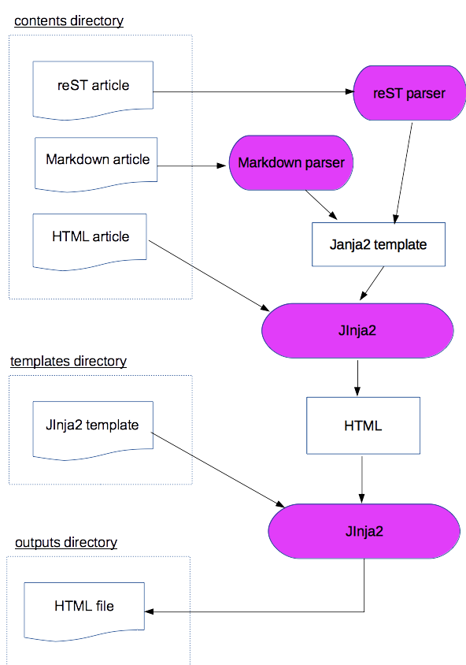

Miyadaikuプロジェクト
Miyadaikuのドキュメントプロジェクトは、miyadaiku-start コマンドで作成します。
$ miyadaiku-start new-project
$ ls new-project/
config.yml contents files templates
ディレクトリ構成
ドキュメントプロジェクトは、次のようなファイルから構成されます。
ドキュメントプロジェクト/
│
├─── config.yml プロジェクト設定を指定するYAMLファイル
│
├─── contents/ reStructuredText/Markdownなどの文書を格納するディレクトリ
│
├─── files/ 画像・バイナリファイルなどを格納するディレクトリ
│
├─── templates/ jinja2テンプレートファイルを格納するディレクトリ
│
└─── outputs/ HTMLなどの出力ファイルを出力するディクレクトリ
- config.yml ファイル
プロジェクト全体のデフォルトとなるプロパティを指定する YAMLファイルです。
- contents ディレクトリ
reStructuredText/Markdownなどによる文書ファイルや設定ファイルなど、 HTMLに変換するソースファイルを格納します。
- files ディレクトリ
miyadaiku-build コマンドで変換せずに、そのまま outputs ディレクトリにコピーするファイルを格納します。
- templates ディレクトリ
jinja2テンプレートファイルを格納します。
- outputs ディレクトリ
miyadaiku-build コマンドで生成したHTMLなどのファイルを格納します。
コンテンツファイル
miyadaiku-build コマンドは、miyadaikuプロジェクトの contents ディレクトリの次の形式のファイルをコンテンツファイルとして処理し、HTMLファイルを作成します。
*.yml ファイル
*.rst ファイル
*.md ファイル
*.html ファイル
処理結果は output ディレクトリに出力します。上記以外の画像ファイルなどは、ソースファイルとして処理をせず、そのままoutput ディレクトリにコピーします。
contents ディレクトリのコンテンツには、次の4種類があります。
- アーティクル
contents ディレクトリの文書ファイルは、アーティクルとして読み込まれ、Jinja2テンプレートエンジンでHTMLを生成して出力します。
- スニペット
スニペットはアーティクルと同じく文書ファイルですが、HTMLページには変換されません。他のアーティクルやテンプレートなどから読み込んで使用します。
- インデックス
Blogサイトのインデックスページなど、アーティクルの一覧ページを作成するコンテンツです。指定した条件のアーティクルを取得し、複数ページのHTMLファイルを出力します。
- コンフィグ
コンフィグファイルは、Miyadaikuプロジェクト全体の設定や、文書プロパティのデフォルト値をディレクトリごとに指定する YAMLファイルです。HTMLファイルは出力しません。
テンプレート
contents ディレクトリのコンテンツファイルは、Markdownパーザなどで変換してから、Jinja2テンプレートエンジンによってHTMLに変換されます。生成されたHTMLから、templates ディレクトリの Jinjaテンプレートで最終的なHTMLファイルを作成し、outputs ディレクトリに出力されます。
